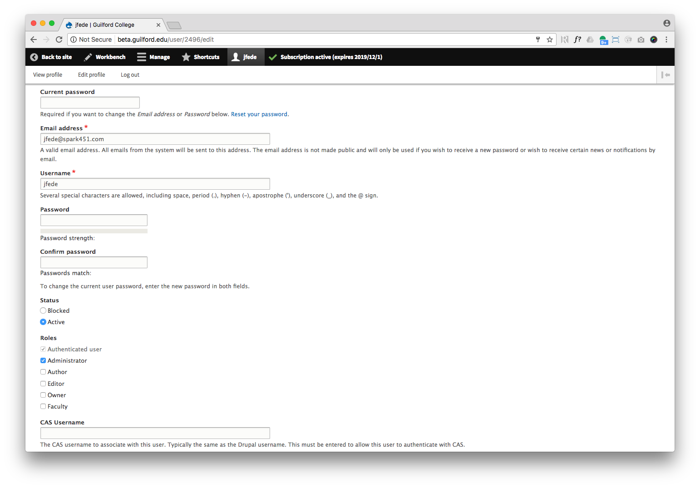

Guilford College Website User Guide
- What is Drupal? CMS Essentials
- Components: The Site’s Visual Building Blocks
- Image Specifications
- Word Counts
- Logging Into the Site
- Creating and Editing Content
- Pages
- Programs
- Your Profile
- Articles
- Events
- Departments
- Videos and Galleries
- PDFs and Documents
- Links
- Content Maintenance
- Advanced Topics
- Alerts
- Events with Registration
- Managing Menus
- Reordering Menu Items
- Webforms: Building and Managing
- Event Management
- Taxonomies
- Editorial Access and Workflows
- Roles and Permissions
- Meta Tags/SEO
- Managing Images and Files
- Glossary
What is Drupal? CMS Essentials
Guilford College’s website is built with a content management system – or CMS – called Drupal. A CMS makes it possible for people without technical skills to create and edit pages, news articles, events and other content. If you’ve edited pages on Guilford College’s old site or used blogging platforms like Wordpress, then you’ve used a CMS.
Drupal is an open source product. A strong, dedicated community of developers from around the world contributes the code that makes Drupal run. There’s no cost to use it, and it is the platform of choice for organizations ranging from The Economist to The City of Austin, and Cisco to other colleges and universities.
Key Concepts
Content Types
Often, when we’re on websites, everything seems like it’s just a page. But in Drupal, there are many different things that create a site. They’re called “content types.”
Content types are like containers that hold elements together.
For example, the elements of an article include a title, an image, a subtitle and body copy.
Guilford College’s site includes custom content types like program created for the College’s academic degrees.
TIP
- To see all content types that you can create, go to Manage > Content > Add Content
Nodes
Every piece of content on the site (a page, a video, a program, etc.) is called a node. When you’re editing the site, you’ll see the unique node ID in the browser’s URL bar. Something like this:
http://guilfordcollege.edu/node/116/edit
Site visitors never see this unique ID. Instead, they see standard URLs like:
http://guilfordcollege.edu/how-to-apply
Templates
Templates pull all the elements of a content type into a visual look. They’re what visitors see when they come to the site. Guilford templates are designed to be highly flexible.
Components: The Site’s Visual Building Blocks
Components are the visual building blocks of the site’s templates. When you create content (e.g. page, program), you are given a variety of components to use. The available components, and the way you can arrange them, have been carefully thought out to balance flexibility with visual consistency across the site.
Consult the Guilford Website Styleguide to see the visual look of all website components and typographic elements.
Components are listed below in alphabetical order.
Accordion
Use the accordion component to create question and answer or FAQ sections. This component can also be used for any text you want content to expand and collapse.
Billboards
Billboards — or “headers” — are built into the top area of certain content types, such as pages and events. Unlike other components, you won’t need to add billboards manually. Billboards may display an image, page title and call-to-action buttons.

Calls to Action / CTAs
Calls-to-action are available throughout the site. (CTAs are similar to the buttons on the old Guilford site.)
There are two types:
CTA buttons on headers and teasers
CTA cards
TIPS
- Use CTAs to inform users of the thing you want them to do next or learn more about.
- Use CTAs contextually. For example, place an Apply CTA on a program page since that’s the likely next action users would want to take.
- Do not overuse CTAs on a page or other content. If there are too many, they won’t stand out as important.
Factoid
Use the factoid component to highlight key facts about the College, a program or another topic relevant to the page. Include a short title — preferably one that in includes a number — and a longer description. Factoids do not include links.

Feeds
Feeds are used to automatically pull information into special sections on pages. There are two kinds of feeds: News & Events and Social.
News & Events Feed
The news & event feed pulls news articles and events from Drupal and arranges them into a grid on the page. Choose from predefined categories to dictate what kind of news and events display.
Social Feed
Social posts can be pulled from accounts in Facebook, Twitter and Instagram. Follow the instructions to add accounts to the feed for each page.
Horizontal Rule
Insert a horizontal rule to separate sections on a page. Rules can be the same width of the content or the full-width of the browsers.
Images
Two types of stand-alone images can be added to the page: content-width and screen-width. Content-width images include a caption or description. See the Image Specification section below for details.
Quote
Use the quote component to call out a brief quote by a student, professor, or other community member.
Tip
- You can call out quotations within the rich text component, too.
Rich Text
Rich text — or “body copy” — is useful when you need to present longer passages of text. The rich text component allows formatting such as heading styles to give your text hierarchy, making it easier for readers to follow. Bulleted lists, italics and bolding are also available. Use links embedded in the text to link to other pages, external sites, or documents like PDFs uploaded as media into Drupal.
Media (images, image galleries, videos, profiles) can also be added to rich text. They will be inserted to the left or right, and your text will flow around it.
TIPS
- Use heading styles to structure your text. See below for reasons why and how to do it.
- Be purposeful in using formatting tools such as bold and italics. They should add meaning rather than decoration.
- Each rich text component can take one piece of media. If you want more than one piece of media to accompany a particular section of text, break the text into more than one rich text component.
Heading Styles
When entering content into the rich text component you can use heading styles to format headings and subheadings for sections and paragraphs. Heading styles adjust the style of text and headings automatically so they remain consistent.
IMPORTANT: Do not use bold for headings and subheadings. Only use bold for emphasizing words or phrases in a sentence of body copy.
Headings are necessary because they:
- Give hierarchical structure and order to your information, making it more useful to users.
- Are essential for accessibility; visitors using a screen reader need headings to understand the order of information.
- Are important for SEO (search engine optimization).
How to Add Headings
- Highlight the text you want to make a heading.
- Click the Format button and select the heading style you want to use. Note: The title of the page is a Heading 1 so you will want to use a Heading 2, 3 or 4 depending on if there is an intro teaser or other heading in another component already on the page. Be consistent with your heading styles across pages in a section of the site or tabs on content types like programs and departments.
Smart Blocks
The smart block component is available on the page content type. Smart blocks have the same fields as other common teaser blocks but look very different in design.
Stacks
Stacks are groupings of cards of different types — e.g., profile, video, gallery. Stacks are a good way to call attention to content that is relevant to the page the user is on.
How to add a stack:
Choose where you want to place a stack.
Add cards one at a time.
Fill in the content for each card.
TIPS
- If there’s important information you want users to see in a stack, set the card that contains that information to be a featured card.
- Use a variety of card types when creating a stack.
- By design, there is no maximum for the number of cards you may place in a stack. While there is not a required minimum, aim for at least three cards.
Tables
The table component is for adding tabular data to a page. Please note that the table should only be used for numerical-type information and not for organizing paragraphs; use tables for structured information.
EXAMPLES
- Do: use a table to show the tuition for degree programs for the upcoming academic year.
- Don’t: use tables to list descriptions of different types of programs or organizations.
How to Add a Table
It’s a good idea to put your table in context with a title and any explanatory copy that will help users understand it. You can do that with the rich text component or an intro teaser.
Once you have added that text:
- Choose Table from the component list.
- Enter the number of rows and columns you’ll need. You can adjust this if you need to.
- Enter the data into the table.
TIPS
- Use the rich text component (or an intro teaser) to hold explanatory copy related to the table.
- If you use column headers, make sure to have them on each column so the table displays properly on mobile.
- Don’t use footnotes in the table or descriptive copy about the data. That info should be in the rich text or other component.
- Tables can also be added inside the rich text component.
Teasers
Teasers are groupings of design elements that typically include an image or video, title, subtitle, and text. Some also include a call-to-action button.
There are several types of teasers, and you can use them in a variety of combinations. For example, create a five piece teaser unit by stacking a feature teaser above four teaser blocks.
TIP
- Use teasers to organize page content into easy to scan areas rather than walls of text.
Intro Teaser
Includes a title, subtitle and area for intro text. CTA buttons can be included as well. Use for introducing a page or section on a page. Combines well with the rich text component.
Feature Teaser
Includes a title, subtitle, area for text, and spot for media (image, video or gallery). A CTA can be included as well. Works well as a stand-alone feature on a page to highlight a topic with media.
Teasers
Allows for up to four blocks that each include a title, short description, media and CTA. Use it to summarize a topic and lead users to more information.
Personalization
The Guilford website includes a suite of very powerful personalization features. Used to their fullest, these features will make the website feel relevant and friendly for all types of visitors. Personalization also places Guilford College’s website on the leading edge of higher education sites.
Guilford Notes
With Guilford Notes users can easily save pieces of content — sentences, even — and whole pages to their own digital notebook, and then return later to view the content again.
Friendly Tips
Friendly Tips are quick pieces of content (text, quotations, images) that can be added to the following components:
- Teasers
- Feature Teaser
- Intro Teaser
Use tips to offer instructions or help to website users on or near a link or CTA. Tips are meant to be written as if a person is giving advice.
TIPS
- Use one or two tips per page. Tips are considered special when used sparingly.
- Create friendly tips from students for student centered pages; and from parents for parents centered pages. Users like to receive advice from people with whom they can relate.
Audience Aware Content
The most ambitious — and unique — personalization feature allows Guilford to create and deploy audience-specific content on pages throughout the site. Basically, if you can programmatically identify a particular audience (i.e. set of users), then you can develop special, personalized content that only the target audience will see. Executing this feature well requires strategic content planning.
What can be personalized?
The Page content type can be personalized, while departments, programs, events, articles, and profiles cannot. On normal pages, the following components can be made audience aware: header, intro teaser, feature teaser, and images.
Audience Tags
We identify what type of user is viewing a page by reading what audience tags are in his or her browser. Users collect tags in three ways:
- By visiting pages on the site.
- When the site automatically identifies their location (based on his or her computer’s IP address).
- When users come in to the site from a specially created link (i.e. as part of a campaign).
We have created three location segments into which we will sort all website visitors:
- In-state (inside North Carolina)
- Out-of-state (outside North Carolina; inside USA)
- International (outside of the USA)
Additionally, all pages on the site will be tagged with one or more of the basic audiences groups we identified during our definition phase:
- Prospective Students
- Current Students
- Parents
- Alumni
Displaying the Right Content
Once an audience is defined, you can create content for it using the Audience Based Content component. You will need to write a default version of the component, along with any personalized versions. Site visitors who do not belong to one of your targeted audiences will see the default content. Follow the steps below:
- Choose “Add — Audience Based Content” from the bottom of the edit screen.
- Select which kind of content you will be personalizing by clicking on one of the content type buttons under the “Content Block Default” header. Fill in the content here. This will be the content that appears when no personalized content is being shown.
- Click “Add — Content Block Version” to add a personalized version of the content block you just created.
- Use the “Audience” field to choose from the predefined audience types. This determines which audience will see the content in this version.
- Click a button to choose the same content type as the default version above. Fill in the content block.
- Be sure to save your work.
TIPS
- Target the most valuable audience segments. Don’t spend time creating custom content for relatively unimportant audiences.
- A single page can have more than one audience aware component.
Image Specifications
Minimal preparation is required when uploading images. For example, cropping is not necessary.
The site will automatically crop the image to fit the design and the screen size the user is visiting the site on. To ensure that auto cropping doesn’t cut off an important part of an image, you can select a focal point when uploading the image. The focal point won’t be cut off when an image needs to be cropped for viewing on smaller screens.
While you do not need to crop images before uploading, you should follow these size and aspect ratio guides. Please note that the sizes listed below are in a 2x format and will provide the best quality on devices with high resolution screens.
Home Feature & General Headers
Feature/header images are displayed at the top of page templates as part of the feature/billboard components.
Recommended Image Size: 3840 px x 2160 px
Recommended Image Ratio: 16:9
Profiles
Profile images are shown in both the faculty & staff directory as well as at the top of individual profiles.
Recommended Image Size: 600 px x 600 px
Recommended Image Ratio: 1:1
Stack
A stack is used to display profile, gallery or video cards on the page template. The image specifications below are appropriate for any of these cards regardless of the content type.
Recommended Image Size: 1000 px x 560 px
Recommended Image Ratio: 16:9
News and Event Feeds
These are the specs for all card types used in the news or event feeds.
Recommended Image Size: 1920 px x 1080 px
Recommended Image Ratio: 16:9
Smart Block
Smart Block are interactive cards that include icons/graphics.
Recommended Image Size: 1920 px x 1080 px
Recommended Image Ratio: 16:9
Teasers
These are the specs for all teaser types: feature and smart teasers.
Recommended Image Size: 975 px x 548 px
Recommended Image Ratio: 16:9
General Images
When using an image on its own (i.e. not in a teaser or card) on a page or other content type, follow these specifications. Note that images can be entered as full-width, full-width with parallax effect or content width.
Recommended Image Size: 3840 px x 2160 px
Recommended Image Ratio: 16:9

About Parallax
With parallax, images are arranged in the background, with section content overlaying it so content moves on top of the image as the user scrolls. To use this effect, set layout to “full” when adding your image.
Word Counts
Most components have a recommended word count to ensure that text fits properly.
Accordion
Question: 10 - 15 words Answer: No limit. But follow standard web writing practices. Be brief.
Factoid Blocks
Title: 5 - 8 words Subhead: 20 - 30 words
Rich Text/Body Copy
There isn’t a limit to the number of words you can use for rich text or other text that would be considered “body copy” for things like bios, articles, etc.
However, keep in mind that online readers scan more than read. This means that breaking text into chunks with headings will greatly help your audience find relevant information. Also, keep sentences short (20 to 25 words) and don’t be afraid to use single-sentence paragraphs. Newspapers are filled with them.
Smart Container
Title: 8 - 10 words Subhead: 5 - 10 words Description: 10 –15 words
Teasers
Intro Teaser
Title: 5 - 10 words Description: 15 - 25 words
Feature Teaser
Title: 5 - 10 words Subhead: 10 - 15 words Text: 20 - 30 words
Teaser Blocks
If Using 2 Blocks
Title: 10 - 15 words Text: 15 - 20 words
If Using 3 Blocks
Title: 5 - 10 words Text: 15 - 20 words
If Using 4 Blocks
Title: 8 - 10 words Text: 15 - 20 words
Logging Into the Site
To manage content, including your profile, to http://guilford.edu/user and enter your username and password. You can also use your CAS account.
Creating and Editing Content
The types of content and specific pages you have access to create and edit on the site is determined by things like your role — staff or faculty, for example — and how much writing and editing for the site is part of your job responsibilities.
Resources
Writing for the Web Editorial Style Guide
All content you create or edit for the website (regardless of your particular role) should follow the guidelines and tips in this editorial style guide. It is important to be familiar with what this document says about guilford.edu’s goals, audience, voice, copy style, and other topics before working on content for the website.
Website writers and editors should also familiarize themselves with the user personas developed for the website. Have in mind these three fictional users when creating content. Does the material speak to one or more of them? Is your copy’s message something they would be interested in? Is your writing style — i.e. the words you use, your sentence structure — compatible with this audience?
Workbench
If you have access to edit or create content on the site you will see an area called Workbench when you log in. This is where you will go to do any content-related activities on the site. For example, find content you created and want to edit or create new content.
The Workbench menu contains different items depending on a person’s role. For example, members of the marketing department will see different items than other departments.
Review and Publishing
There is an editorial review process that determines which content can be published immediately when you create or edit it, and which will be reviewed and published or return for additional edits. In the saving options, if you see the option to Save and Publish, your content will be published without review.
How To Create or Edit Content
Below is a simple overview of how to create and edit content. The sections that follow in this guide contain more detailed instructions and tips for specific content types.
TIP
- Creating and editing content is similar to completing a form. What appears to site visitors on a page, for example, are the fields you fill out.
Create Content
- In the upper navigation menu bar, go to Content > Add Content
- Select the type of content you want to create.
- Complete the form.
- Find the Save button at the bottom of the screen and select the desired save option.
TIP
- Most content types have tabs that correspond to the different parts of the content. For example, the header is the top of a page and includes the image and call-to-action buttons. Make sure to click on each tab to ensure that you are including the necessary information.
NOTE Depending on your editing permissions, you will see different save options. For example, you may be able to publish immediately, or your content might be sent to an editor for review.
How to Edit Content
- In the upper navigation menu, select Content.
- From the index page select the page, program, event, etc. that you want to edit.
- At the top of the page, you will see options for Edit Draft or New Draft. Click whichever option appears.
- Edit the text, images or other information as needed.
- Find the Save button at the bottom of the screen and select the desired save option.
NOTE Depending on your editing permissions on the site and the type of content you are editing your changes might be reviewed by an editor or published immediately.
Pages
Pages are the most common content type. Follow these general steps to create or edit a page. Keep these instructions and tips in mind:
Adding Page Content
Go to the content tab on a page you want to edit.
Scroll to the bottom, and you will see an array of buttons representing the available components.
Click on the one that would best fit the content you want to add.
Enter your content into the fields.
Save your additions or continue to add components and then save.
TIPS
- You can add as many or as few components as needed to accommodate the content you want to present to site visitors. Keep in mind that the information, images, etc. on the page shouldn’t feel too sparse or too dense.
- To reorder components, use the crosshair symbol to drag and drop.
- When writing text for call-to-action buttons or links, use descriptive, active words that make it clear where users will go when they click/touch it. For example, “explore majors” rather than “click here.”
Adding Personalized Content
Go to the content tab on a page you want to edit.
Scroll to the bottom, and you will see an array of boxes representing the available content component types.
Click the Audience Based Content button. Inside this component, choose which kind of component you would like to personalize.
Fill in the fields to create a default version of the component.
Click Content Block Version to create a personalized version of the component.
Fill in the audience and all content fields inside the personalized version of the component.
Add as many different versions as you want — each with its own audience and content.
Save your additions.
Editing Page Content
- Go to the content tab of the page you want to edit.
- Find the component you want to edit and select Edit.
- Make your changes.
- Scroll to the bottom of the page and save your changes.
Adding a Page to a Menu
Open the menu settings box. If you are on a desktop computer, it should be on the right side of your screen.
Tick the box that says “Provide a menu link”
Enter a menu title. This is what will appear in a menu. It should be short (no more than 3 words) and clear.
Under Parent item, select the section the page should appear under.
Save the page.
TIPS
- To ensure clear menu titles, avoid acronyms or other insider terms.
- To move an item in a menu, refer to these instructions.
Programs
The program content type is primarily intended for presenting academic majors and minors to prospective students. It’s also used to provide information about hands-on learning opportunities and other academic- or career-focused programming offered by Guilford College.
Follow these general steps to create or edit a program. Keep these instructions and tips in mind:
Adding Program Content
The main content for programs is organized by tabs. By default, every program has an overview tab that should provide a synopsis of the program in a compelling manner.
- Go to the Sections tab and enter the overview content. In addition to the body text, you can add images, teasers and other components within the overview section.
- Add new sections by selecting the Add - Tab Section button towards the bottom of the page.
- Fill in the fields on the new section.
- Save your additions.
TIP
- Your program will automatically be added to the program finder where site visitors can browse all Guilford programs.
Editing Program Finder Content
- Select the Program Finder Content tab.
- Follow the instructions below the fields.
- Save your changes.
Categorizing a Program
The categorization section of a program is where you enter details about the program that are used in such things as the program finder where visitors browse majors and minors, graduate programs, etc.
- Select the Categorization tab.
- Use the fields to categorize the program and name its degree and department.
- If a program belongs to more than one category — for example, both major and minor — use the “Add another item” button to add a category.
- Save your changes.
Your Profile
 Members of Guilford College’s faculty and staff have profiles on the website. Follow these steps to manage yours:
Go to http://guilford.edu/user and log into the site using your Guilford College network account. This is the same username and password you use for your email, e.g., username@guilford.edu.
On the top left of the screen you’ll see your username. Click it, then click Edit profile.
Click on Main Profile. Use the the subtabs — Basic Info, Bio, Ways to Connect, etc. — to see fields where you can enter or modify your contact details, short biography and other information.
After you’ve made your entries or edits, go to the bottom of the screen and click Save.
Faculty Members
In addition to your main profile, there is academic-related information (e.g. areas of interests) that you can provide/edit. To do so, go to Faculty Profile (the tab to the right of Main Profile), enter or edit your information and click Save
Articles
With the article content type you can create a traditional news-style article, a press release or a press mention. There is also an option to create a story. Stories are less time-sensitive, or “evergreen” content. Examples include a feature profile of a member of the Guilford community.
How to Create Articles
Follow these general steps to create the type of article you want to add to the site. (Note: To select the type of article, use the type dropdown list.) Keep these instructions and tips in mind as you create your article:
Categorization
This is the area where you will enter information about the topics the article covers. Adding this information helps the article appear in the proper section of the site.
Use the Categories section to:
Enter broad topics the article relates to as well as the program/department it might feature. For example, undergraduate, graduate, academics, service learning, student life, journalism.
Note: The items that you will be able to enter in this section are pre-defined, meaning that they are from a list managed by site administrators.
Use the Tags section to:
Add more specific topics the article covers. For example, a person, a special award.
Events
Older events will be pulled into the site from the current Guilford event calendar. Follow these general steps to create the type of event you want to add to the site. Think carefully when choosing Event Type and Content Categories. These will determine where this event is displayed on the site.
Departments
The department content type provides a standardized way for departments to present their work, faculty members, academic programs and more.
Follow these general steps to create or edit a department. Keep these instructions and tips in mind:
Adding Department Content
The main content for departments is organized by tabs. By default, every department has an overview tab that should provide a summary of the department’s activities, offerings, etc.
To add a department overview:
- Go to the Sections tab and enter the overview content.
- At the bottom of the screen, select a save option to save your work.
To create tabs:
- Go to the Section tab and select Add - Tab Section.
- Type in a title for the tab and select an icon that matches the type of component you want to add.
- Save your additions or continue to build the department by adding tabs and then save.
Videos and Photo Galleries
To place videos and photo galleries into an area of the site, the first step is to create the video or gallery. Follow these steps to create a video or a gallery, then follow the steps below to embed it.
To add a video or gallery to a page:
Add a feature teaser, teaser block or stack to a page.
Click the button representing the media button you want (gallery, image or video).
Start typing the title of the video or gallery and then select the one you want to add from the list.
PDFs and Documents
You can add PDFs and other documents to certain content types, such as pages.
Document types that can be uploaded:
Word
Powerpoint
Excel
Plain Text
To add a document, follow these steps:
- Go to the documents tab.
- Choose the file.
- Click the select files button to finish the upload.
- Open to view the file you just uploaded by clicking on its title.
- Copy the URL.
- Copy and use this url to reference this file elsewhere on the site.
TIPS
- Use the name or subject of the file as your link text:
- Good: Undergraduate Research Magazine
- Bad: click here
- Documents added to pages are added to the Drupal system globally and are thus available to be used with any other content on the site. Documents can also be added by choosing from the top Drupal navigation Content > Media > Add new media.
Links
To create a link to a page on the site or an external website:
- Highlight the text you want to link and click on the link icon.
- Begin typing the name of the page or paste a URL.
TIPS
- Write links as short, clear calls to action or descriptive text.
- Good: learn about the lecture.
- Bad: click here.
- Leave space between link phrases if there are more than one in a sentence, and use 2–4 words. It can be difficult for mobile users to click on single-word links if they’re near other links.
Content Maintenance
Keeping the content on guilford.edu fresh, accurate and current is an important aspect of maintaining the website. Consult the Guilford Website Content Maintenance Guidelines for the content update plan.
Advanced Topics
The following sections cover tasks and functionality that not all site users have access to. If you are interested in doing one of these tasks and do not have access to do so on the site, contact a site administrator.
Alerts
Alerts allow you to quickly post a notice on the homepage, and set it to expire. They are color-coded so you can use them for things like on-campus emergencies or closings, updates about a resolved emergency, or things like reminders for applicants.
Note: the ability to create alerts is limited to certain members of Guilford staff. Follow these general steps to create an alert.
Events with Registration
Events appear as cards on the site as well as in the main calendar. Events can be pulled in from the current Guilford calendar — e.g. visit days — or created in the CMS.
Follow these general steps to create an event. (Not every user can create events.) To ensure that the event appears in the correct area of the site, make sure to complete the categorization tab of the event. If you want people to be able to register for the event, follow the instructions below.
Viewing Registrations
To see who has signed up for the event, go to the event and open the registration list tab.
Menus
Note: Not all users have access to manage menus. If you do not have access to the menu area described below and need a change made to a menu, submit a request.
To manage the site’s menus, go to Structure or Shortcuts > Menus.
The most common task involving menus is reordering menu items.
Reordering Menu Items
- Select Edit for the menu you want to change. Note: Main navigation is the site’s primary menu.
- Use the crosshair to drag and drop the menu item to a new location. You can move it within its sibling items, move it under a new parent, or to a new level.
- Select Save to keep your menu changes.
Webforms: Building and Managing
Depending on your access level on the site you can select pre-built form templates to add to an area of the site. Or you will have the ability to build a form template.
Create a Form from a Template
Follow these general steps to begin the form-creation process. Then follow these instructions and tips:
Provide Context
Use the Header > Overview section to include a sentence or two introduction about what the form is for. In a friendly manner, include any special instructions or important information the person completing the form should know.
Selecting the Form Template
In the form tab begin entering the name of the form you want to use.
Build a Custom Form Template
The site uses the YAML webform module which comes with template-style forms for a variety of common form types, e.g., registration. These templates can be used as a starting point to create custom forms. If you need to create a custom form and have access to the Structure > YAML Forms section of the CMS, follow the instructions below. If you do not have access to that section, contact a site administrator.
To customize a form:
Go to Structure or Shortcut > YAML form
Give the new form a title and description.
Customize the form by editing or deleting fields and adding new elements/fields.
Click Save elements to save the form. The form will now be available when using the Webform content type.
TIPS
- To edit the confirmation message people see when they submit a form (a recommended step), go to the Settings tab of the form and edit the text in the confirmation settings box.
- To see the types of fields/elements you can use, view the example forms.
- The module supports emailing people who submit a form and other more advanced functionality. Learn more about YAML form features.
Managing Submissions
To view, download or take other actions related to form submissions, go to the Results tab of a form.
Event Management
The site uses the RNG module for managing event registration. Learn more about the module.
Taxonomies
Taxonomies are used to manage things like the categories that programs appear under in the program finder. They are also used to manage categories for other types of content, such as articles and event types.
Taxonomies are also used to manage who can edit certain content on the site. The editorial sections taxonomy is one example.
To manage taxonomies, go to Structure > Taxonomy
TIP
- If you want change the name of a term that is already used to categorize content, edit the term rather than delete and add a new term. This way you don’t have to retag the content with the updated term name.
Editorial Access and Workflows
To control specific content (e.g. a particular page or program) a CMS user can edit, the site uses a module called Workbench and taxonomies.
The primary taxonomy that’s used to manage editing access to content is the Editorial Sections taxonomy. That taxonomy allows for the creation of groups such as Marketing or Admissions. CMS users are assigned to the various editorial sections created.
Certain content, such as pages, includes an editorial sections tab. In that tab you can select an editorial section. Users who are part of that editorial section can then edit the content, even if they did not originally create it.
An example: The undergraduate academics page is tagged with the Marketing and Communications editorial section. Jane is a member of the Marketing and Communications editorial section. Jane can edit the undergraduate academics page even though she isn’t the original author.
To manage the editorial section taxonomy, go to Structure > Taxonomy
To manage Workbench, go to Configuration > Workflow
Workbench
The Workbench module manages publishing workflows and revisions.
Workbench can be configured to suit Guilford’s editorial needs. Some examples: When an admin creates a new page they can save and publish it immediately. When an editor creates a page and saves it, it is saved as a draft for review by an author who publishes it. When an editor wants to edit an existing page they create a new draft, save it, and an author publishes it or sends it back as a draft.
To configure Workbench settings, go to Configuration > Workflow
Roles and Permissions
To control actions CMS users can take and the parts of the CMS they have access to, the site uses roles and permissions.
A “role” is a type of user, e.g., administrator, author, editor. A “permission” is a task that can be completed, e.g., publish a program, delete a page.
Users are allowed to perform tasks based on the role they are assigned. Roles can be assigned manually by administrators and automatically through the Guilford College data source used to authenticate users. Roles and permissions can be expanded and modified as needed.
To manage roles, go to People > Roles
To manage permissions, go to People > Permissions
Meta Tags/SEO
To include information like page descriptions that search engines use to match users’ search queries with web content, the site uses the Meta Tags module.
To add a page description to a page or other piece of content, open the Meta Tags box (it will be on the right-hand side of the page if you’re on a desktop computer). Then enter the description.
You can also manage what’s shown when site content is shared on social networks like Facebook using the Meta Tags module.
The Meta Tags module includes many more ways to optimize content for search engines and social networks. Learn more about the Meta Tags module.
Managing Images and Files
When adding an image or file to a piece of content, users have the option to select images and files previously uploaded to the site. This can help when images or files need to be used frequently or in multiple places.
To manage the images and other files on the site, go to Content and open the Files tab.
Glossary
Alternative Text
A very short description of an image. This description is read to site visitors with visual impairments who use screen readers.
Aspect Ratio
The ratio of the width to the height of an image.
Component
An element used to build content, primarily pages. E.g. a feature teaser.
Content Type
The types of content that comprise the site: page, program, event, webform, etc.
CTA/Call to Action
Clickable prompts that guide users to content or to complete an action (e.g. learn more, register, submit form). They are most often buttons.
Crosslink
A link that takes users from one page of the site to another.
Focal Point
A tool that lets CMS users indicate the most important part of an image so it isn’t cut off when an image is auto cropped to fit smaller screen sizes.
Metadata
Information about a piece of content. A common example is the “about this page” description in the Meta Tags section of a page.
Node
A piece of content on the site with a URL. Examples, the homepage, an article, a page.
Parallax
An effect on pages that arranges an image in the background with section content moving on top as the user scrolls.
Paths
The unique end portion of the URL for a piece of content. For instance, for a page whose full URL is http://guilford.edu/node/202, the path is node/202.
Responsive
The auto optimization of a site for multiple devices. For example, a page being just as usable on a smartphone as it is on a desktop.
Stack
A collection of cards that animates when a user interacts with it.
URL
The “address” of a piece of content. E.g. the URL for the homepage is http://guilford.edu
Workbench
Where CMS users create and manage content. It also controls the publishing workflow.